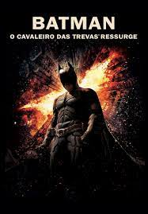

Peter enfrenta novos desafios enquanto aprende a lidar com "seu dom e sua maldição", tentando desesperadamente harmonizar suas duas identidades: a do super-herói aracnídeo, o Homem-Aranha, e a do estudante universitário. A continuação do maior sucesso dos quadrinhos, Homem-Aranha!
No novo país, Dre se apaixona pela sua colega de classe Mei Ying, que torna-se sua amiga, mas as diferenças culturais tornam essa amizade impossível. Pior ainda, os sentimentos de Dre fazem com que o aluno mais brigão da sala e prodígio do Kung Fu, Cheng, torne-se seu inimigo, fazendo com que Dre sofra bullying nas mãos dos amigos de Cheng, sem poder reagir. Sem amigos na nova cidade, Dre não tem a quem recorrer exceto ao zelador do seu prédio Mr. Han (Jackie Chan), que é secretamente um mestre do Kung Fu.
O Rei Leão, da Disney, dirigido por Jon Favreau, retrata uma jornada pela savana africana, onde nasce o futuro rei da Pedra do Reino, que precisa vencer a traição e a adversidade para assumir o lugar que é seu por direito.
Com direção de John Lasseter, Carros (2006) narra a história do novato carro de corrida Relâmpago McQueen. Enquanto vai para a etapa final do campeonato – o qual ele lidera e pode se tornar uma estrela do automobilismo se vencer –, McQueen acaba se perdendo e chegando à pequena cidade Radiator Springs

Oito anos após a morte de Harvey Dent, a cidade de Gotham City está pacificada e não precisa mais do Batman. A situação faz com que Bruce Wayne (Christian Bale) se torne um homem recluso em sua mansão, convivendo apenas com o mordomo Alfred (Michael Caine).
 link